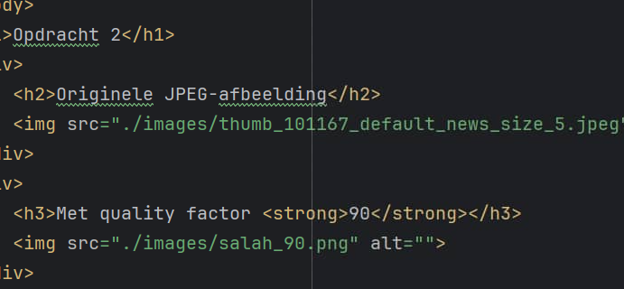
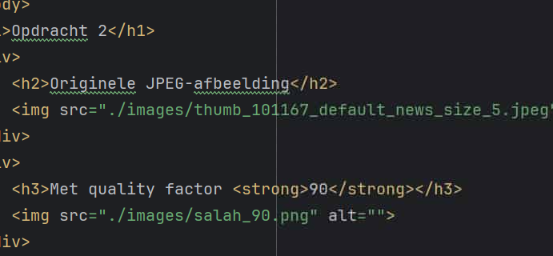

Opdracht 2
Originele JPEG-afbeelding (Salah)

Met quality factor 90
Met quality factor 70
Met quality factor 40
Originele Screenshot JPEG (Webstorm)

Met quality factor 70

Met quality factor 40

- Conclusie
- Wanneer je een afbeelding gebruikt op je webpagina met een formaat waarop lossy compression wordt toegepast, bv. JPEG, dan zal deze afbeelding kwaliteitsverlies ondergaan van zodra je de afbeelding zal comprimeren.